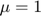

MAE 5803 - Homework #1 Problem #2
Tim Coon: 25, January 2017
Contents
clear; close all; clc;
Consider the following second-order system
a) Identify Singular points
For , find the singular points of the system, then determine the stability of the singular points by analyzing the linearized equation about each singular point. Generate the phase portrait of the system using MATLAB® to confirm your analysis. Frame your plot so that the horizontal and vertical axes range from -2 to 2.
mu = 1; tspan = [0 1]; figure(); hold on for x1 = -2:.5:2 for x2 = -2:.5:2 X0 = [x1; x2]; [t,X] = ode45(@P2stateEqn,tspan,X0,[],mu); h = plot(X(:,1),X(:,2)); c = get(h,'color'); plot(X0(1),X0(2),'+','color',c); end end axis([-2 2 -2 2]) xlabel('$x_1$') ylabel('$x_2$') title('Nonlinear system phase portrait, $\mu = 1$') hold off
First Singular Point
The first singular point is a stable node at (1,0). Use the Jacobian to linearize about this point. Both eigenvalues have negative real parts, supporting the ID as a stable focus.
eValue1 = eig([-2 0; 0 -1])
eValue1 =
-2
-1
Second Singular Point
The second singular point is a saddle point at (-1,0). Use the Jacobian to linearize about this point. Both eigenvalues have negative real parts, supporting the ID as a stable focus.
eValue2 = eig([2 0; 0 -1])
eValue2 =
-1
2
b) Let .
Repeat part (a) for .
mu = 0; tspan = [0 4]; figure(); hold on for x1 = -2:.5:2 for x2 = -2:1:2 X0 = [x1; x2]; [t,X] = ode45(@P2stateEqn,tspan,X0,[],mu); h = plot(X(:,1),X(:,2)); c = get(h,'color'); plot(X0(1),X0(2),'+','color',c); end end axis([-2 2 -2 2]) xlabel('$x_1$') ylabel('$x_2$') title('Nonlinear system phase portrait, $\mu = 0$') hold off
Singular Point,
The singular point at the origin is an unstable node. Use the Jacobian to linearize about this point. One eigenvalue at the origin of the complex plane with no negative eigenvalues means the stability of the system cannot be determined by the eigenvalues alone. From the phase portrait, it is clear any state in the right-half plane tends toward the origin. This would indicate stability were it mirrored by the left-half plane. However, any state in the left-hand plane escapes along the negative axis, so the node is unstable.
eValue1 = eig([0 0; 0 -1])
eValue1 =
-1
0
c) Let
Repeat again part (a) for .
The linearized systems look the same because only affects the forcing function
mu = -1; tspan = [0 1]; figure(); hold on for x1 = -2:.5:2 for x2 = -2:.5:2 X0 = [x1; x2]; [t,X] = ode45(@P2stateEqn,tspan,X0,[],mu); h = plot(X(:,1),X(:,2)); c = get(h,'color'); plot(X0(1),X0(2),'+','color',c); end end axis([-2 2 -2 2]) xlabel('$x_1$') ylabel('$x_2$') title('Nonlinear system phase portrait, $\mu = -1$') hold off
No Singular Points for
There are no singular points within the range .
d) Comments
What phenomenon do you observe as the parameter, , varies as in the above? Explain the reason for your answer.
Because always, it is clear the slope towards the horizontal axis decays exponentially in all scenarios. Effectively, changes the initial rate of change of the solution in the negative -direction which becomes more negative as the function moves away from the vertical axis. Thus, decreasing serves to increase the initial rate of change in the negative -direction and the singular points first merge at the origin, then move quickly in the negative -direction together.